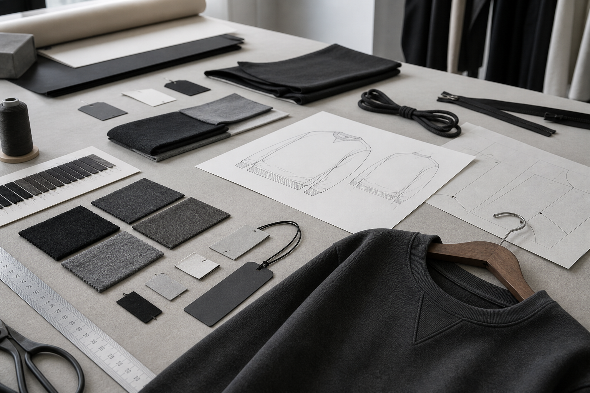
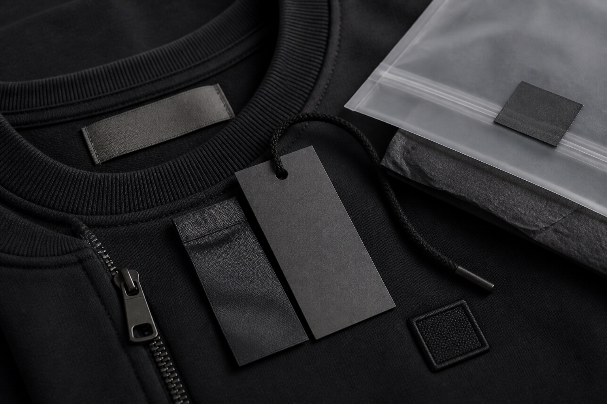

Ürün Fikri
Ne üretmek istediğinizi ve hedeflediğiniz ürün grubunu belirleyin.
Bir ürün fikri, referans model veya oluşturmak istediğiniz koleksiyonla başlayın. Ürün geliştirme, numune, marka detayları ve üretim hazırlığını tek bir süreç içinde yürütüyoruz.
Bir marka kurmak için her detayın hazır olması gerekmez. Elinizde bir ürün fikri, beğendiğiniz bir referans model veya oluşturmak istediğiniz ürün grubu varsa çalışma buradan başlayabilir.
Model, kumaş, kalıp ve ürün detayları adım adım netleştirilerek ilk numune hazırlanır.

Ne üretmek istediğinizi ve hedeflediğiniz ürün grubunu belirleyin.
Referans ürün veya fikir üzerinden model geliştirilir ve ilk numune hazırlanır.
Etiket, logo uygulaması, sallama kartı ve ürün üzerindeki marka detayları hazırlanır.
Ürünün müşteriye nasıl ulaşacağına uygun ambalaj ve sunum detayları oluşturulur.
Onaylanan ürün seri üretime hazırlanır.

Bir giyim markasını yalnızca ürün modeli oluşturmaz. Etiket, aksesuar, baskı veya nakış uygulamaları, sallama kartı ve ambalaj gibi detaylar ürünün müşteriye nasıl sunulacağını belirler.
Tek bir modelle başlayabilir veya birbiriyle uyumlu birkaç ürün grubundan küçük bir koleksiyon oluşturabilirsiniz. Ürünlerin model, kumaş ve görsel detayları aynı marka dili içinde hazırlanır.
Üretmek istediğiniz ürünü, referans görselinizi veya marka fikrinizi paylaşın; başlangıç için gerekli adımları değerlendirelim.